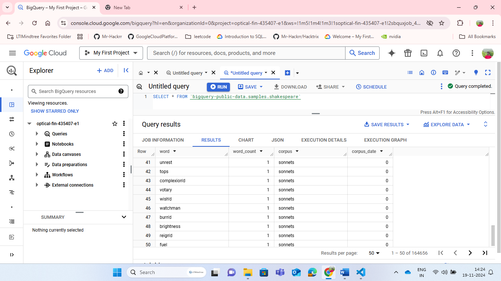
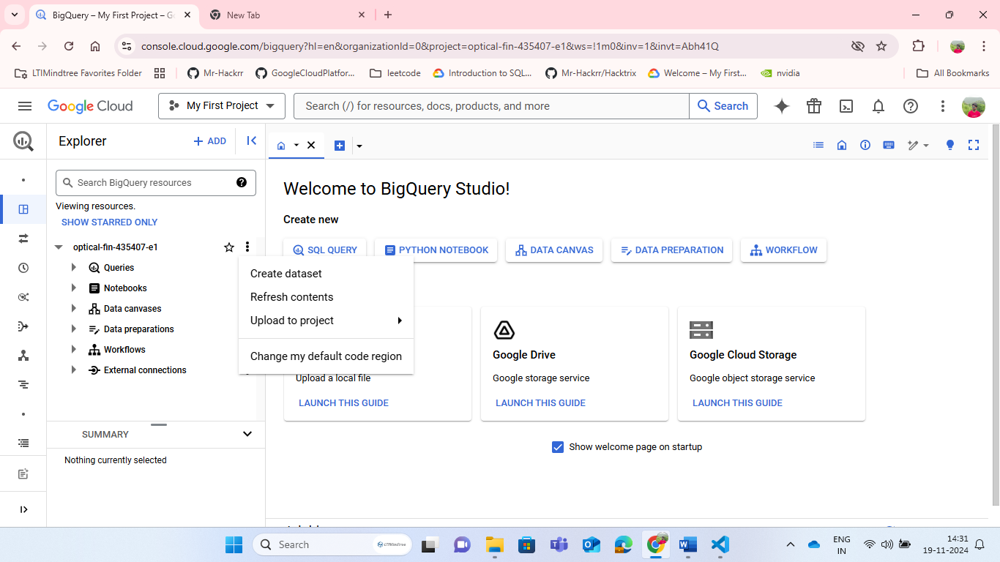
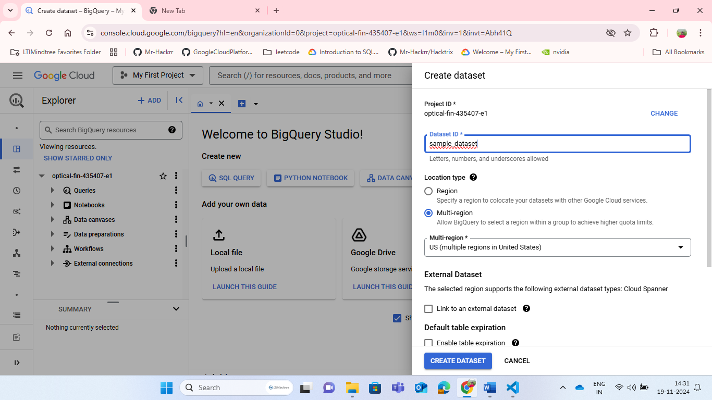
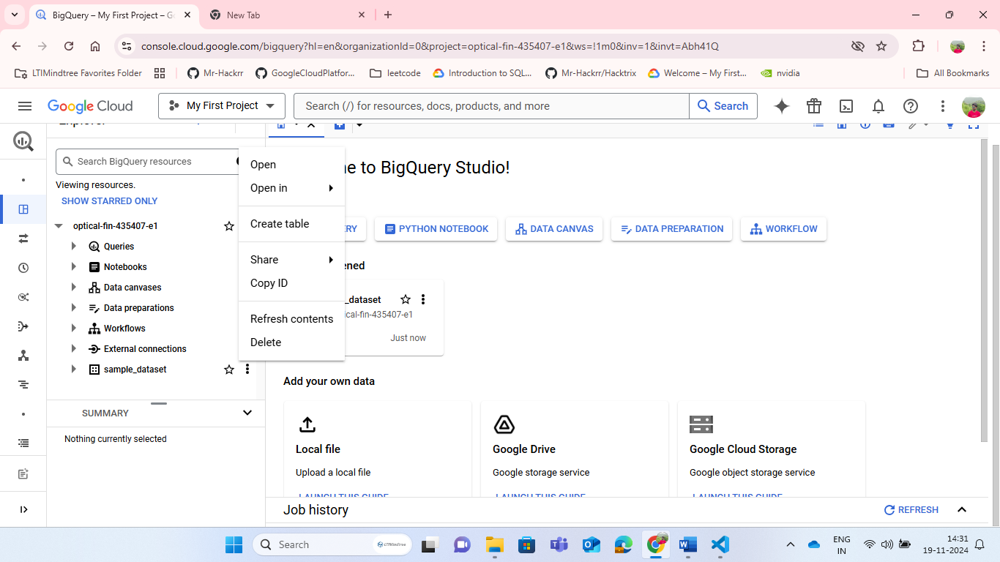
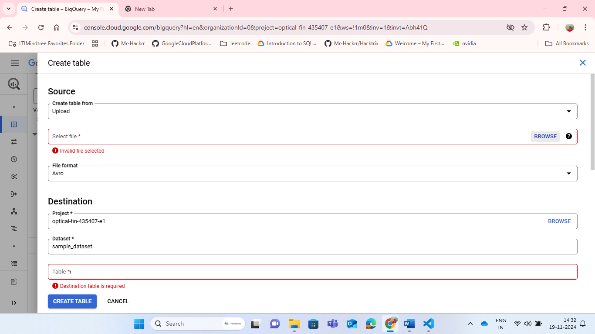
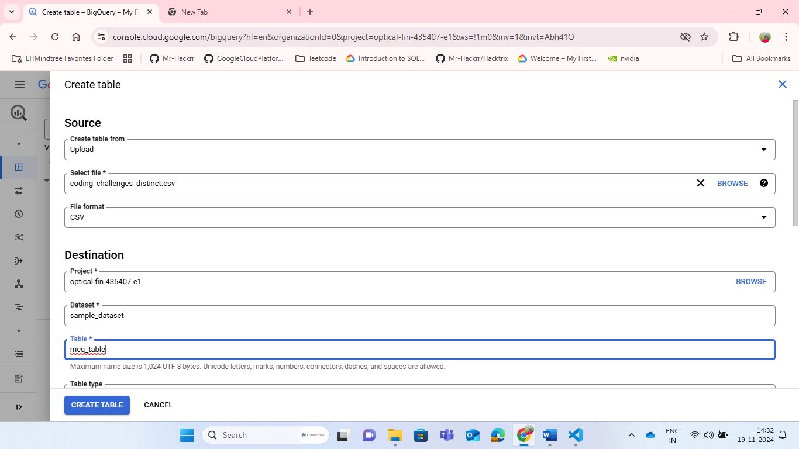
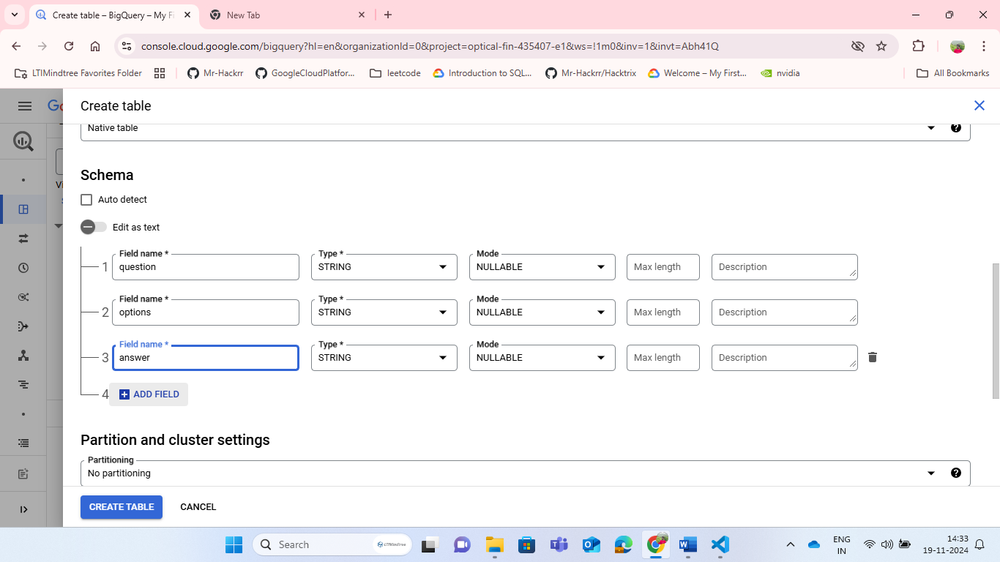
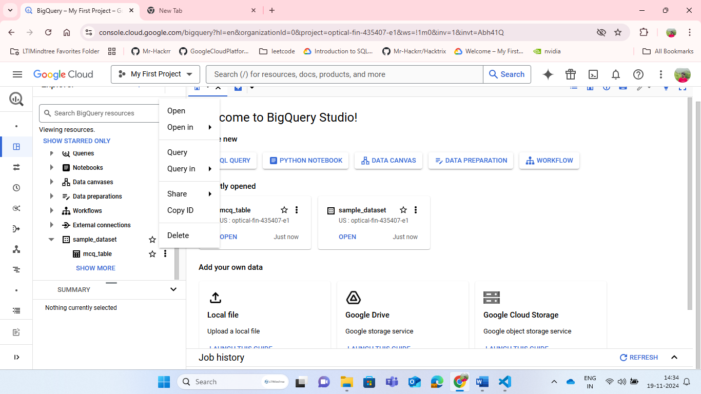
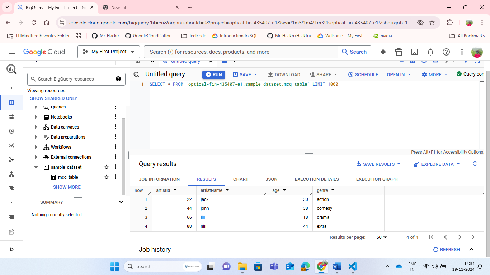

Mastering BigQuery for Efficient Data Analysis
What is BigQuery? - Overview & Benefits
Definition
BigQuery is a fully-managed, cloud-based Enterprise Data Warehouse service offered by Google Cloud. In simpler terms, it's a powerful platform where you can store, manage, and analyze enormous amounts of data from various sources, all in one place.
Key Features
- Scalability: Automatically scales to handle large datasets and complex queries.
- Serverless: No infrastructure to manage; pay only for the resources you use.
- Column-Store Database: Optimized for fast query performance, especially for analytical workloads.
- SQL Support: Use familiar SQL to query your data, making it accessible to a broad audience.
- Integration with Google Cloud Services: Seamlessly connects with other Google Cloud services (e.g., Google Analytics, Google Cloud Storage, Google Cloud AI Platform).
Advantages
- Unlimited Scalability: Handle massive datasets without worrying about storage or computational resources.
- Enhanced Security: Benefit from Google Cloud's robust security measures, including encryption and access controls.
- Streamlined Integration: Easily combine data from diverse sources, thanks to native integrations with Google Cloud services.
- Cost-Effective: Only pay for the resources you consume, reducing costs associated with idle infrastructure.
- Faster Insights: Accelerate your decision-making process with rapid query performance and near-real-time data analysis.
Use Cases
- Data Warehousing:
- Consolidate data from various sources into a single, centralized repository.
- Simplify data management and governance.
- Business Intelligence (BI) and Reporting:
- Create interactive, web-based dashboards to visualize key business metrics.
- Empower stakeholders with self-service analytics.
- Data Science and Machine Learning (ML):
- Prepare, process, and analyze large datasets for model training.
- Leverage BigQuery's integration with Google Cloud AI Platform for streamlined ML workflows.
In a Nutshell: BigQuery is a powerful, scalable, and secure cloud-based data warehouse that streamlines data management, analysis, and visualization, making it an ideal choice for organizations seeking to unlock deeper insights from their data.
Getting Started with BigQuery - Setup & Management
Step 1: Creating a BigQuery Account
- Sign in to the Google Cloud Console: Use your Google account to access the Google Cloud Console.

- Create a New Project:
- Click on "Select a project" > "New Project"

- Enter your project name, select an organization (if applicable), and click "Create"

- Click on "Select a project" > "New Project"
- Enable BigQuery:
- Navigate to the Navigation menu (three horizontal lines in the top left corner) > BigQuery

- If prompted, click "Enable" to activate BigQuery for your project

- Navigate to the Navigation menu (three horizontal lines in the top left corner) > BigQuery
Understanding the Building Blocks
- Projects:
- Container for all resources: Holds datasets, tables, and other BigQuery assets.
- Billing and access control scope: Manage costs and permissions at the project level.
- Datasets:
- Logical grouping of tables: Organize related tables for easier management.
- Access control and storage location: Define permissions and choose a storage location (region) for each dataset.
- Tables:
- Structured data storage: Store and manage your data in a tabular format.
- Supports various data types: Including integers, strings, timestamps, and more.
Access Control & IAM Roles
- Identity and Access Management (IAM):
- Manage permissions with precision: Control who can access and manipulate your BigQuery resources.
- Common BigQuery IAM Roles:
- BigQuery Admin: Full control over projects, datasets, and tables.
- BigQuery User: Can run queries, but cannot manage resources.
- BigQuery Data Viewer: Read-only access to tables and data.
Assigning IAM Roles:
- Go to the IAM & Admin page in the Google Cloud Console.
- Select the project, click "Add" > "New members"
- Enter the member's email, choose the relevant BigQuery IAM role, and click "Add"
Billing and Cost Estimation
- Pricing Model:
- Pay-as-you-go: Charged for storage, querying, and streaming data.
- Free tier available: 1 TB of querying, 10 GB of storage, and more per month.
- Estimating Costs:
- Use the Google Cloud Pricing Calculator to forecast expenses.
- Monitor usage and costs in the Google Cloud Console.
Managing Quotas and Limits
- Understanding Quotas:
- Project-level limits: Restrict resource usage to prevent unexpected costs.
- Adjustable quotas: Request increases for specific resources as needed.
- Common Quotas to Monitor:
- Concurrent queries
- Query bytes processed
- Storage capacity
- Checking and Adjusting Quotas:
- Navigate to the IAM & Admin > Quotas page in the Google Cloud Console.
- Filter by service (BigQuery) and resource to view current quotas.
You're Now Set Up!
- Explore BigQuery's Web UI: Familiarize yourself with the interface.
- Run your first query: Use the SELECT * FROM bigquery-public-data.samples.shakespeare tutorial. 
- Dive deeper into documentation: BigQuery Official Documentation
Loading & Integrating Data into BigQuery
Upload Methods: Getting Data into BigQuery
1. Uploading Local Files
- Supported formats: CSV, JSON, Avro, Parquet, and more
- Upload via:
- BigQuery Web UI: Simple, intuitive interface for small to medium-sized files
- bq Command-Line Tool: Flexible, scriptable option for larger files or automation
- BigQuery Client Libraries: Programmatic uploads using languages like Python, Java, or Node.js
Steps:
- Prepare your file (e.g., ensure correct formatting)
- Choose your upload method
- Select your file and configure options (e.g., schema, data types)
- Confirm and upload
Example: Uploading a CSV File via BigQuery Web UI
- Navigate to the BigQuery Web UI
- Click three dots beside project id 
- Click create dataset. Give name and create 
- You can see dataset name under project id click three dots beside dataset 
- Click dropdown of empty table and select source

- Next, Click browse and select your csv/json/paquet file 
- Give table name 
- Configure Schema and Options as needed 
- Click Create Table to upload and load your data
- You can query by select query tab 
- You can see the result at the bottom of the page. You can check the resource used to run the query also 
Using BigQuery Data Transfer Service
- Automate data transfers from supported sources (e.g., Google Analytics, Google Ads, Amazon S3)
- Benefits:
- Reduced manual effort
- Scheduled, recurring transfers
- Support for large datasets
Setup:
- Enable the BigQuery Data Transfer Service
- Choose your data source and authenticate
- Configure transfer settings (e.g., schedule, dataset, table)
Streaming Data into BigQuery
- Real-time data ingestion for applications with high-volume, high-velocity data (e.g., IoT, logging)
- Methods:
- BigQuery Streaming API: Programmatically send individual records or batches
- Cloud Pub/Sub to BigQuery: Leverage messaging queues for scalable, fault-tolerant streaming
Use cases:
- Real-time analytics and reporting
- Machine learning model training with fresh data
Third-Party Integrations
Google Services
- Google Analytics: Seamlessly integrate website and app analytics data
- Google Cloud Storage: Transfer data from Cloud Storage buckets into BigQuery
- Other Google services: Explore integrations with Cloud Functions, Cloud IoT Core, and more
External Data Sources
- AWS (Amazon Web Services): Transfer data from S3, Redshift, or other AWS services
- Azure: Integrate with Azure Blob Storage, Azure Synapse Analytics (formerly Azure SQL Data Warehouse), and more
- On-Premises Data: Use BigQuery's Data Transfer Service or Partner Interconnect for secure, high-speed transfers from your on-premises environment
Getting Started with Integrations
- Explore BigQuery's Integration Hub: Discover supported sources and services
- Follow Step-by-Step Guides: Find detailed setup instructions for your chosen integration
- Monitor and Optimize: Keep an eye on your data transfers and adjust settings as needed
Call to Action (CTA) Suggestions for Your Website:
- "Start Ingesting Data into BigQuery with Our Easy Upload Guide"
- "Unlock Real-Time Insights with BigQuery's Streaming API"
- "Discover Pre-Built Integrations for Your Favorite Services" (link to a relevant page)
Querying Your Data in BigQuery - A Deep Dive
SQL in BigQuery
- Two SQL Dialects:
- Standard SQL (Recommended):
- Aligns with ANSI SQL standards
- Supports more advanced features
- Use for new projects
- Legacy SQL (Deprecated):
- Older dialect, still supported for backward compatibility
- Migrate to Standard SQL for new queries
- Standard SQL (Recommended):
Query Syntax & Functions
- SELECT Statements:
SELECT * FROM mytable;- Retrieve all columnsSELECT column1, column2 FROM mytable;- Retrieve specific columns
- Common Functions:
COUNT(),SUM(),AVG(),MAX(),MIN()- STRING, DATE, TIMESTAMP, ARRAY, and STRUCT functions
Example: Filtering and Aggregating Data
SELECT
COUNT(*) AS total_rows,
SUM(revenue) AS total_revenue
FROM
mytable
WHERE
date >= '2022-01-01' AND date < '2023-01-01';Query Optimization
- Understanding Query Plans:
- Explain Query: Analyze query execution plans to identify bottlenecks
- Query Plan Visualizer: Visualize query execution steps
- Reducing Query Costs:
- Optimize Filtering:
- Use efficient filter conditions (e.g., date instead of STRING(date))
- Limit
SELECT *usage; retrieve only necessary columns
- Leverage Partitioning and Clustering:
- Reduce scanned data using partitioned tables
- Improve query performance with clustered tables
- Avoid
SELECT *:- Retrieve only required columns to minimize data transfer
- Optimize Filtering:
Example: Optimizing a Query
Before:
SELECT * FROM mylargepartitionedtable WHERE date = '2022-07-01';After:
SELECT
column1, column2
FROM
mylargepartitionedtable
WHERE
_PARTITIONTIME = TIMESTAMP('2022-07-01');Cost Reduction: ~90% less data scanned
Advanced Queries
Array & Struct Operations
- Working with Arrays:
- ARRAY constructor:
ARRAY[1, 2, 3] ARRAY_LENGTH(),ARRAY_TO_STRING(), andOFFSET()functions
- ARRAY constructor:
- Working with Structs:
- STRUCT constructor:
STRUCT('John', 25, 'New York') STRUCT_FIELD()andTO_JSON_STRING()functions
- STRUCT constructor:
Example: Unnesting an Array
WITH
mytable AS (
SELECT
1 AS id,
ARRAY['apple', 'banana', 'orange'] AS fruits
)
SELECT
id,
fruit
FROM
mytable,
UNNEST(fruits) AS fruit;Output:
| id | fruit |
|---|---|
| 1 | apple |
| 1 | banana |
| 1 | orange |
Window Functions & Subqueries
- Window Functions:
ROW_NUMBER(),RANK(),LAG(), andLEAD()functions- Example: Ranking Top 3 Products by Sales
SELECT
product,
sales,
RANK() OVER (ORDER BY sales DESC) AS sales_rank
FROM
myproducttable;- Subqueries:
- Scalar Subqueries: Return a single value
- Array Subqueries: Return an array of values
- Example: Finding Products with Sales Above Average
SELECT
product,
sales
FROM
myproducttable
WHERE
sales > (SELECT AVG(sales) FROM myproducttable);Mastering BigQuery Queries
- Practice with Public Datasets: Explore BigQuery's public dataset gallery
- Join the BigQuery Community: Share knowledge and get help from experts
- Stay Up-to-Date with BigQuery Documentation: Latest features, best practices, and tutorials
Call to Action (CTA) Suggestions for Your Website:
- "Improve Your BigQuery Query Skills with Our Expert Guides"
- "Optimize Your BigQuery Queries for Cost and Performance"
- "Unlock Advanced BigQuery Features for Deeper Insights" (link to a relevant page)
Securing Your Data in BigQuery - Compliance & Governance
Data Encryption
- Protecting Your Data from Unauthorized Access
In Transit Encryption
- Enabled by Default: BigQuery uses TLS (Transport Layer Security) for all data in transit
- Verify Encryption:
- Check the lock icon in your browser's address bar when accessing BigQuery
- Ensure the URL starts with https
At Rest Encryption
- Enabled by Default: BigQuery encrypts all data at rest using AES-256
- Verify Encryption:
- Navigate to the BigQuery Console > Dataset > Details
- Look for "Encryption: Google-managed encryption key"
Step-by-Step: Verify Encryption in BigQuery
- Access the BigQuery Console

- Navigate to Your Dataset

- Verify In Transit Encryption

- Verify At Rest Encryption

Access Control & Identity
- Controlling Who Can Access Your Data
IAM Roles for BigQuery
- Predefined Roles: BigQuery provides roles like BigQuery Admin, BigQuery User, and BigQuery Data Viewer
- Assign Roles:
- Navigate to the IAM & Admin Console > IAM
- Select "Add" > "New members"
- Enter the member's email and choose the relevant BigQuery IAM role
Step-by-Step: Assign an IAM Role for BigQuery
- Access the IAM & Admin Console

- Select the Project and Navigate to IAM

- Add a New Member with a BigQuery IAM Role

Service Accounts
- Create a Service Account:
- Navigate to the IAM & Admin Console > Service accounts
- Select "Create Service Account"
- Generate a Key File:
- Go to the Service accounts page > Actions > Create key
- Choose JSON (Key File) and download the file
Step-by-Step: Create a Service Account and Generate a Key File
- Access the IAM & Admin Console
- Create a New Service Account

- Generate a Key File

Compliance & Certifications
- Meeting Regulatory Requirements with BigQuery
Overview of Supported Standards
- GDPR (General Data Protection Regulation)
- HIPAA (Health Insurance Portability and Accountability Act)
- SOC 2 (Service Organization Control 2)
- and more...
View BigQuery's Compliance Certifications:  BigQuery Compliance Page
BigQuery Compliance Page
Data Governance
- Ensuring Data Quality and Integrity
Data Quality Checks
- Use BigQuery's Built-in Functions:
IS_NULL(),IS_NOT_NULL(),VALIDATE()for data validation
- Create Custom Checks:
- Utilize User-Defined Functions (UDFs) for complex validations
Step-by-Step: Perform Data Quality Checks in BigQuery
- Access the BigQuery Console
- Write a Query with Data Quality Checks
- Execute the Query and Review Results

Auditing & Logging
- Enable BigQuery Auditing:
- Navigate to the IAM & Admin Console > Auditing
- Select "Create sink" to set up auditing
- View Audit Logs:
- Go to the Logging Console > Logs Viewer